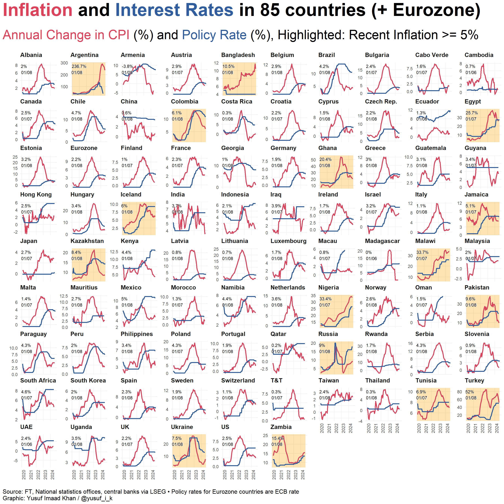

// JavaScript code to extract data from FT chart and download as CSV
(function() {
function jsonToCsv(items) {
const replacer = (key, value) => value === null ? '' : value; // handle null values
const header = Object.keys(items[0]);
const csv = [
header.join(','), // header row
...items.map(row => header.map(fieldName => JSON.stringify(row[fieldName], replacer)).join(','))
].join('\r\n');
return csv;
}
// Assuming the data is stored in _Flourish_data variable
var data = _Flourish_data.data.map(d => ({
Country: d.filter,
Date: new Date(d.label).toISOString().split('T')[0], // converting timestamp to ISO date
Policy_rate: d.value[0],
Annual_change_in_CPI: d.value[1]
}));
var csv = jsonToCsv(data);
// Create a link and download the CSV
var blob = new Blob([csv], { type: 'text/csv' });
var url = window.URL.createObjectURL(blob);
var a = document.createElement('a');
a.setAttribute('hidden', '');
a.setAttribute('href', url);
a.setAttribute('download', 'flourish_data.csv');
document.body.appendChild(a);
a.click();
document.body.removeChild(a);
})();Everybody was inflation fighting…those hikes were fast as lightning
Economics
The US Federal Reserve is set to reduce interest rates for the first time in four years. Rates were hiked up globally to kill off the Great Inflation born of the pandemic and Russia-Ukraine war. Hiking rates was a blunt and painful way to deal with inflation - it increased the cost of borrowing, tightened financial conditions, and squeezed economies. Countries the world over increased rates to tackle inflation and to also maintain dollar exchange rates. Worse, the rate hikes increased debt servicing costs for developing countries, precipitating debt crises. And to really pile things on, the higher rates have likely impeded the speed and scale of investment for the green transition. Given the Federal Reserve’s primacy in the global financial system, this forthcoming rate cut is huge - even if overdue.
Anyway, I was browsing the FT inflation tracker to have a look at how things are going across the world. The tracker doesn’t have the very latest data for every country, but it’s pretty good. On the tracker, you can see a bunch of useful charts breaking down figures for inflation and interest rates in various countries. But there is no big synoptic visual that jointly:
- Shows trends in inflation and interest rates between 2020-24
- Shows trends for every country/area on the tracker simultaneously
- Highlights countries that still have relatively high inflation
Such a visual would capture the “Great Inflation” and the coordinated monetary tightening that took place. Such a visual might also disabuse us of a US-centric picture of inflation that sidelines other countries (no matter the primacy of the Fed). Maybe all this is a bit ambitious, but I had a go anyway. Watch out for the varying y-axes, hey:

I made this using the data from the FT inflation tracker. A little bit of javascript written by chatGPT and thrown into the browser grabs the data for us in a nice format:
Then we load some libraries and do a bit of tidying up:
library(tidyverse)
library(readr)
library(janitor)
# Grab the data
ft_flourish_data <- read_csv("240913_flourish_data.csv")
# Put it in long format and relabel long country names so they're visible on facet
inflation_data <- ft_flourish_data %>%
pivot_longer(3:4) %>%
clean_names() %>%
mutate(date=ymd(date)) %>%
mutate(country = case_when(
country == "Czech Republic" ~ "Czech Rep.",
country == "Trinidad and Tobago" ~ "T&T",
TRUE ~ country
))
glimpse(inflation_data)Rows: 9,496
Columns: 4
$ country <chr> "UK", "UK", "UK", "UK", "UK", "UK", "UK", "UK", "UK", "UK", "U…
$ date <date> 2020-02-01, 2020-02-01, 2020-03-01, 2020-03-01, 2020-04-01, 2…
$ name <chr> "Policy_rate", "Annual_change_in_CPI", "Policy_rate", "Annual_…
$ value <dbl> 0.750, 1.710, 0.100, 1.523, 0.100, 0.767, 0.100, 0.480, 0.100,…Then create some more objects to add flags and variables to highlight countries with recent (they aren’t the very latest figures for every country) inflation of >= 5% inflation:
# Flag the most recent value for inflation + if its >= 5%
recent_val <- inflation_data %>%
filter(!is.na(value),
name=="Annual_change_in_CPI") %>%
group_by(country) %>%
mutate(most_recent = date == max(date)) %>%
mutate(flag = if_else(name == "Annual_change_in_CPI" & most_recent & value >= 5, TRUE, FALSE)) %>%
mutate(color_sq = if_else(flag, "orange", "white")) %>%
ungroup() %>%
filter(name == "Annual_change_in_CPI") #%>%
#mutate(norm_value = scales::rescale(value)) - I briefly thought about making the facets into a sort of heat map coloured by latest value of inflation. For this I needed to normalise values. It ended up looking a bit messy so I left it out.
# Create a dataset for background rectangles
background_data <- recent_val %>%
filter(most_recent) %>%
mutate(xmin = ymd("2020-01-01"),
xmax = ymd("2024-09-01"),
ymin = -Inf, ymax = Inf) Finally, you just plot it:
library(ggtext)
plot1 <- ggplot(inflation_data, aes(date, value, group = name, colour = name)) +
# Background rectangles
geom_rect(
data = background_data,
aes(xmin = xmin, xmax = xmax, ymin = ymin, ymax = ymax, fill = color_sq),
inherit.aes = FALSE, alpha = 0.3
) +
# Line plot
geom_line(size = 0.9) +
# Facet by country
facet_wrap(~country, scales = "free_y") +
# Labels
xlab("") +
ylab("") +
# Theme adjustments
theme_minimal() +
theme(
legend.position = "none",
plot.title.position = "plot",
plot.caption.position = "plot",
plot.caption = element_text(hjust = 0, size = 12),
plot.title = element_markdown(face = "bold", size = 36, margin = margin(b = 20)),
plot.subtitle = element_markdown(size = 26, margin = margin(b = 20)),
panel.grid.minor = element_blank(),
strip.text = element_text(face = "bold", size = 12, hjust = 0, margin = margin(b = 10)),
axis.text.x = element_text(angle = 90, hjust = 1)
) +
# Color scales
scale_fill_identity() +
scale_color_manual(values = c("#de425b", "#2f5d9e")) +
# Annotation: recent values (white text with background shadow)
geom_text(
data = recent_val %>% filter(most_recent),
aes(label = paste0(round(value, digits = 1), "%", "\n", format(date, "%d/%m"))),
inherit.aes = FALSE, color = "white", fontface = "bold",
x = -Inf, y = Inf, hjust = -0.15, vjust = 1.2, size = 3
) +
geom_text(
data = recent_val %>% filter(most_recent),
aes(label = paste0(round(value, digits = 1), "%", "\n", format(date, "%d/%m"))),
inherit.aes = FALSE, color = "black",
x = -Inf, y = Inf, hjust = -0.1, vjust = 1.2, size = 3
) +
# Titles and labels
labs(
title = "<span style = 'color: #de425b;'>Inflation</span> and <span style = 'color:#2f5d9e;'>Interest Rates</span> in 85 countries (+ Eurozone)",
subtitle = "<span style = 'color: #de425b;'>Annual Change in CPI</span> (%) and <span style = 'color:#2f5d9e;'>Policy Rate</span> (%), <span style = 'background-color: orange;'>Highlighted</span>: Recent Inflation >= 5%",
caption = "Source: FT, National statistics offices, central banks via LSEG • Policy rates for Eurozone countries are ECB rate\nGraphic: Yusuf Imaad Khan / @yusuf_i_k"
)
# Save it as PNG
ggsave(
dpi = 600, width = 14, height = 14,
units = "in",
bg = "white",
plot = plot1,
"plot1.png",
type = "cairo-png")
# Display the plot
plot1
Everybody was inflation fighting
Those hikes were fast as lightning
In fact, it was a little bit frightening
The green transition was threatened by global tightening